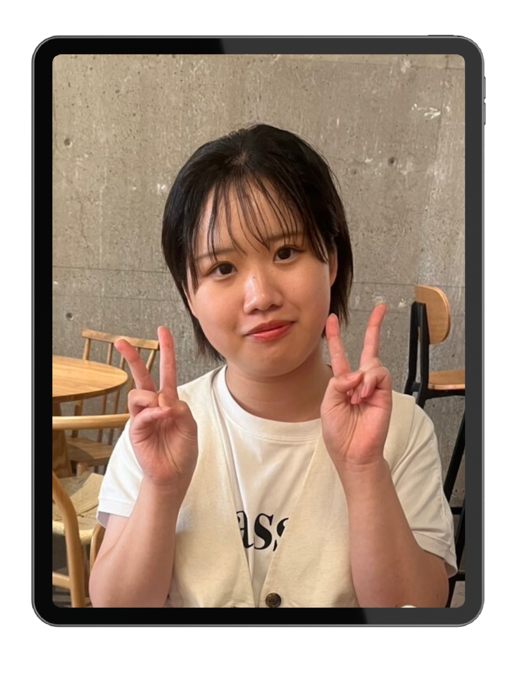
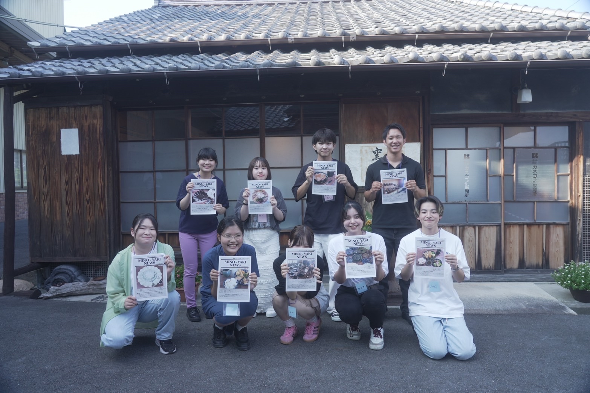

わたしについて

加藤美玖
大学：愛知淑徳大学ビジネス学部ビジネス学科
年齢：2004.08.28（21歳）
資格：ＩＴパスポート（2023.10取得）
趣味：カメラ、アニメ、ドラマ、マンガ
座右の銘：不撓不屈
これまでの経験について

①写真部 部長
大学に入学してから、「光画部」という写真部に所属しています。はじめは、人との交流が楽しくて参加していたのですが、しだいに写真を撮ることの楽しさを発見し、本格的に学ぶようになりました。 活発的に参加する姿勢から大学２年の秋に次期部長として任命され、大学3年生の春頃に正式に部長となりました。初めて部活の部長になったため、不安こそありましたが、前年度とは違う試みにいくつか挑戦し、 コミュニケーションを意識しながら活動してきました。

②企業様とツアー
大学２年生のとき、学内の授業で知り合ったNPO法人とお皿の企業様とツアーを行いました。経営者様から打ち合わせの際に、「若い世代に陶磁器の魅力を知ってもらう機会が少ない」ということをお聞きしました。 そこで、５ヶ月間にわたり大学生４人が主体となって魅力が伝わるツアーを企画しました。特に、私はクリエイティブな作業が得意ということもあって、「チラシ作成」「写真撮影」「HPの文章作成」を行いました。 また、50人規模の授業で告知など宣伝活動にも注力しました。その結果、参加者が定員の半数と小規模でしたが、それぞれと密にコミュニケーションを取りながら、ツアーを進めることができました。 終了後も、参加者から「お皿の魅力について知ることができた」というフィードバックをいただき、経営者様から「ありがとう」と感謝されました。